AngularJS 시작하세요
간단 명료 웹 어플리케이션 개발!
발표자 : 고재도 / haibane84@gmail.com
고재도
Java & JavaScript Framework 개발자이며 지식 공유를 통해 늘 끊임없이 배우고자 노력합니다.
- 대우정보시스템 프레임워크 센터 Java&JavaScript Framework R&D
- Korea AngularJS User Group 운영자 http://www.angularjs.co.kr/
- Korea Sencha User Group 활동 마이크로스프트웨어 잡지 연재 및 ExtJS 그룹 활동
- Undefine:D 커뮤니티 운영진 http://www.facebook.com/groups/html5jsstudy/
haibane84@gmail.com http://www.facebook.com/jeado.ko
우리가 만들고자 하는 것
What is our target?
DO
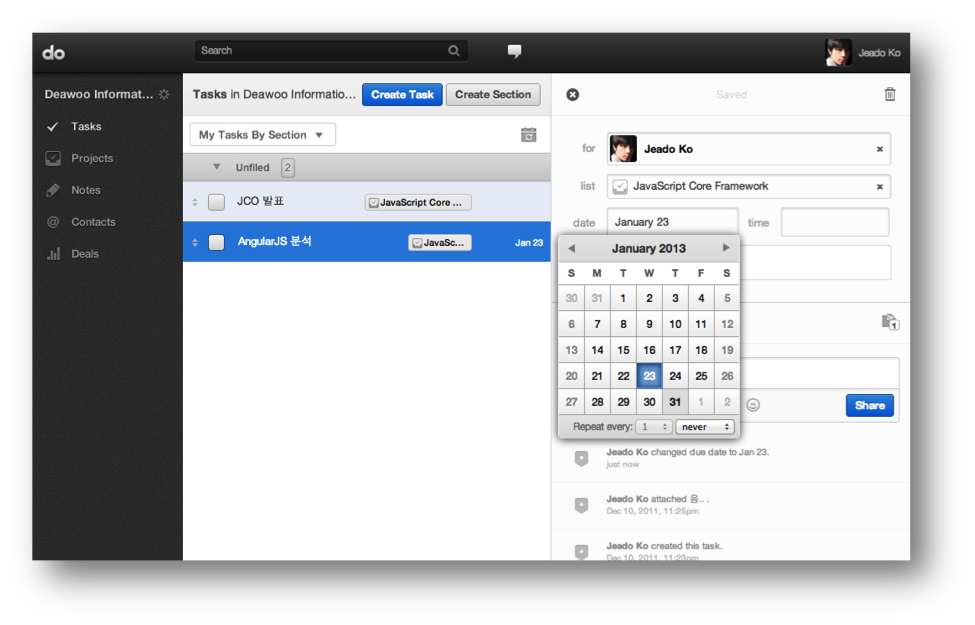Gmail
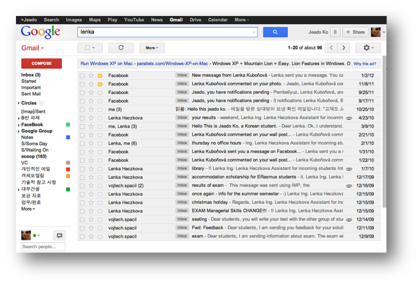Jobvite
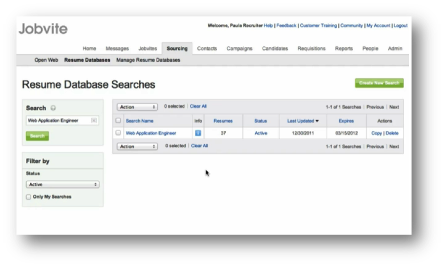Web Application
특히 CRUD성 웹 어플리케이션
웹 어플리케이션 개발 시 고려할 점
다양한 JavaScript Frameworks
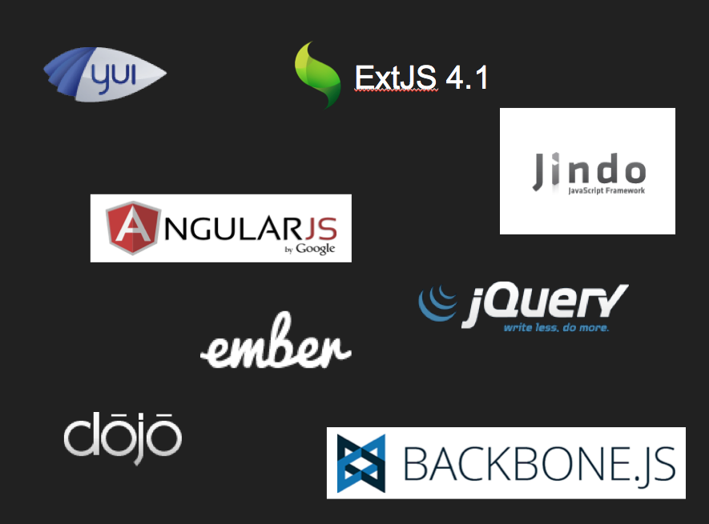그리고 MVC JavaScript Frameworks
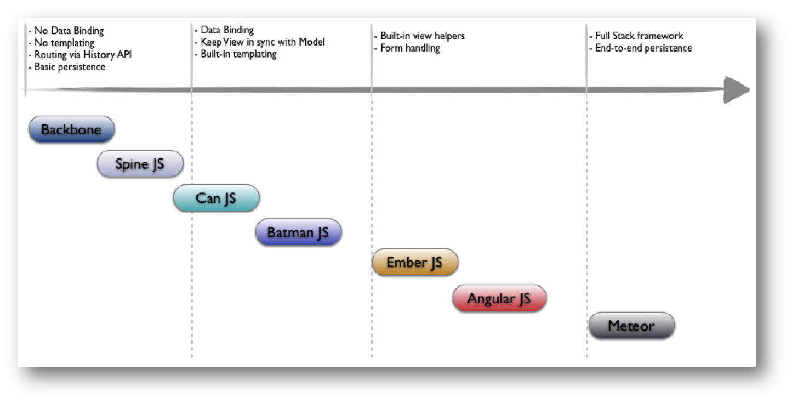An overview of AngularJS
Google이 만든 웹 어플리케이션을 위한
Structural Framework
- 양방향 데이터 바인딩
- MVW
- Template
- Directive를 통한 컴포넌트 재사용
- E2E 테스팅 및 Mocks
- 의존성 주입 (DI)
- ...
CRUD Apps 필수 기능 제공을 통한
어플리케이션 개발의 단순화
양방향 데이터 바인딩
일반적인 단방향 데이터 바인딩

양방향 데이터 바인딩

jQuery와 AngularJS의
데이터 바인딩 구현 비교
jQuery Version
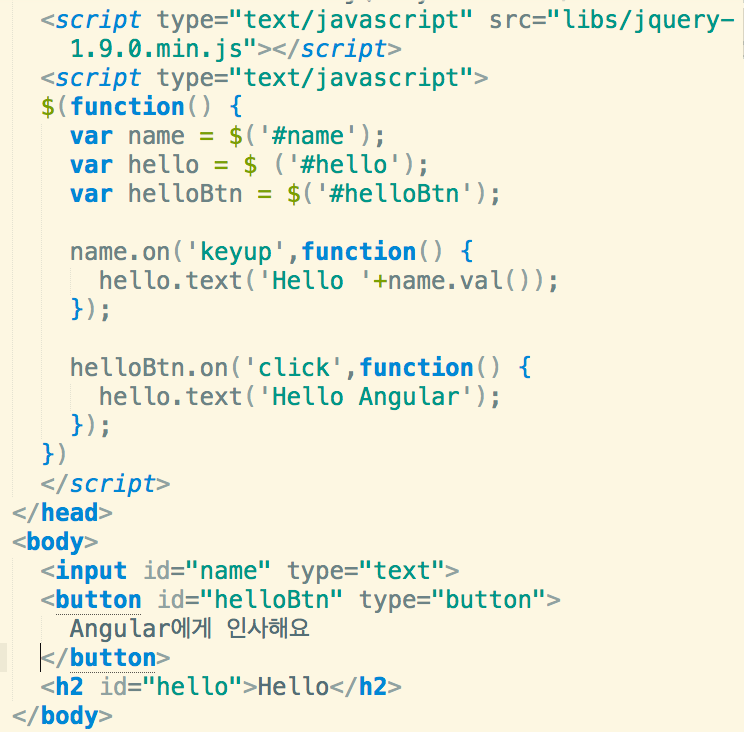Angular Version
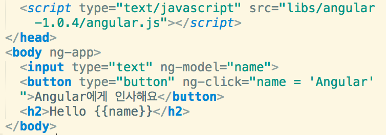ng-app, ng-model, ng-click
간단한 CRUD 웹 어플리케이션
개발을 통하여 세부 기능 파악
사용자 관리 데모
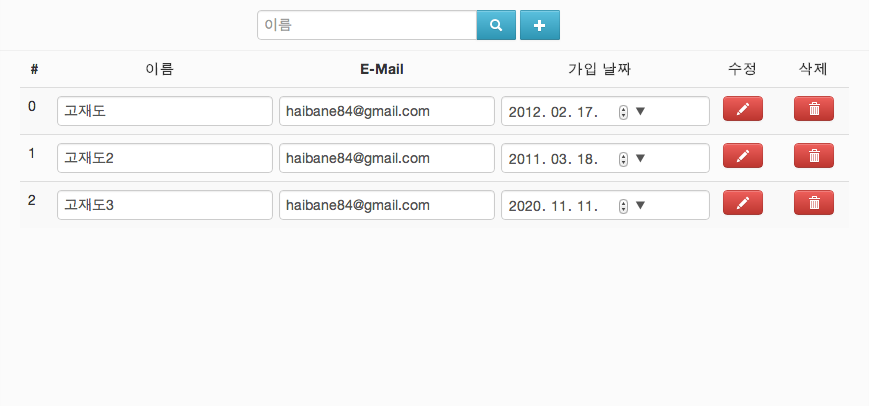{{ expression }}
예제
- {{ 1+2 }}
- {{ 3*10 | currency }}
- {{ user.name }}
특징
- Scope 객체 기준으로 속성들을 검사한다.
(window 로부터가 아니라…) - Null 에러를 무시한다.
({{a.b.c}} vs {{((a||{}).b||{}).c}}) - 조건문은 올 수 없다.
- 필터들과 함께 쓰인다.
({{ 3*10 | currency }})
Angular가 제대로 실행 되지 않을 경우 브라우저에 {{ 표현식 }}이 그대로 보이게 된다.
MVC 구조
View와 Model 그리고 Scope

Controller
- 하나의 View에 대한 비즈니스 로직을 담는다.
- Scope 객체의 초기 상태를 셋업한다.
- Scope 객체에 행위를 기술 한다.
Directive
Directive를 통하여 새로운 HTML 문법을
브라우져들에게 가르칠 수 있다.
Built-in Directive
a, form, input, ngApp, ngBind, ngChange, ngClass, ngClick, ngController, ngCloak, ngDbclick, ngDisabled, ngHide, ngHref, ngInclude, ngModel, ngMousedown, ngRepeat, ngView, ...
Custom Directive
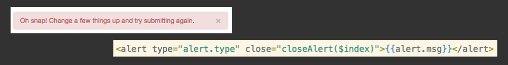Custom Directive
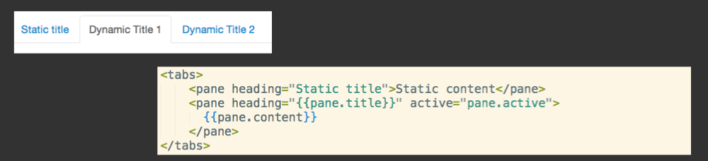Custom Directive
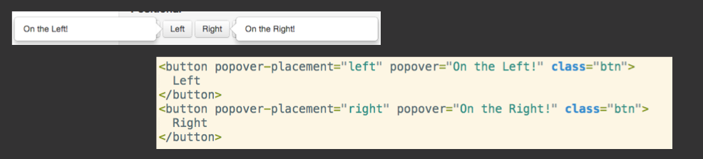Directive 사용 DEMO
Module

var userModule = angular.module('userMnge',[]);userModule.controller('mainCtrl',function($scope){ .... });userModule.directive('unicorn',function(){ .... });userModule.filter("unicorn",function(){ .... });userModule.factory("unicorn",function(){ .... });
<html ng-app="userMnge">var userModule = angular.module('userMnge',['ngResource',...]);Testing 그리고 Angular
End-to-end Test
Test Scenario DSL 제공
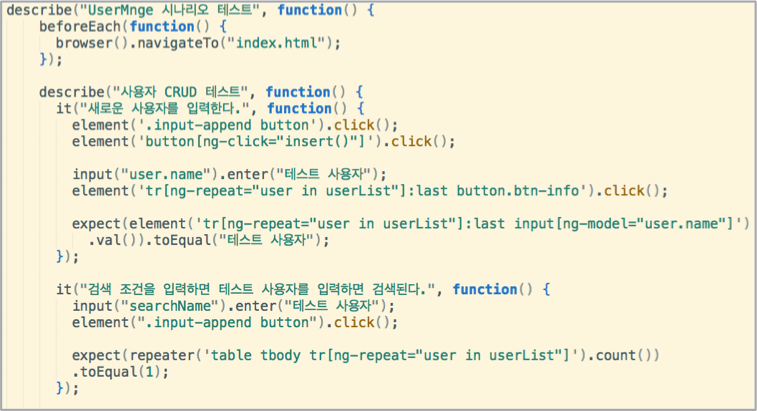Unit Test
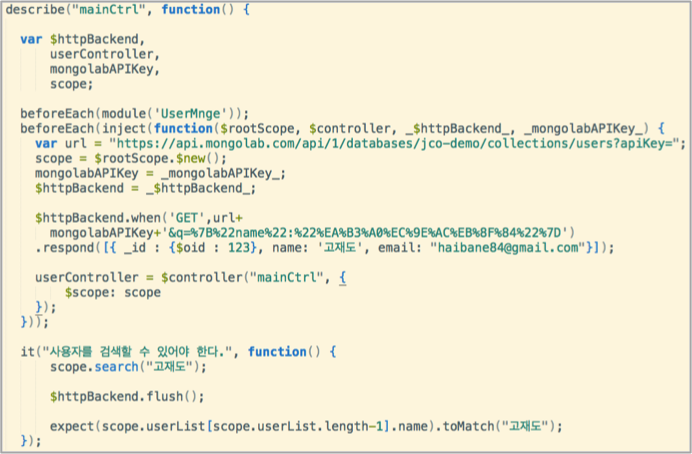
- inject
- module
Testing DEMO
의존관계 주입
Dependency InjectionThere are only three ways how an object or a function can get a hold of its dependencies:
- The dependency can be created, typically using the new operator.
- The dependency can be looked up by referring to a global variable.
- The dependency can be passed in to where it is needed.
(출처 : http://docs.angularjs.org/guide/di)
강하게 결합된 경우
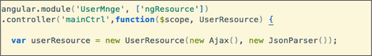 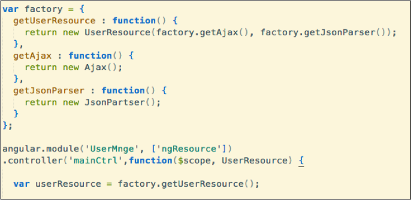느슨하게 결합된 경우
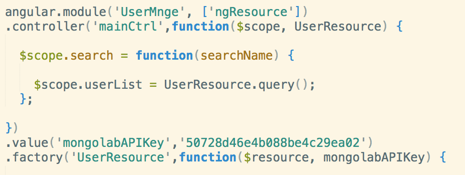- DI는 자신이 사용하는 오브젝트에 대한 선택과 생성 제어권을 외부로 넘기고 자신은 수동적으로 주입받은 오브텍트를 사용하게 된다.
- 이는 특히 Unit 테스트 작성에 큰 도움을 준다. 사용하는 오브젝트에트의 Mock을 만들어서 주입이 가능하기 때문이다.
유용한 레퍼런스 사이트
- AngularJS 공식 블로그 : http://blog.angularjs.org/
- 한국 AngularJS 사용자 그룹 : http://www.angularjs.co.kr/
- Angular JS Tutorial Site : http://egghead.io/
- 추천 블로그 : http://www.yearofmoo.com/
- 추천 블로그 : http://briantford.com/blog/
- 추천 블로그 : http://deansofer.com/blog